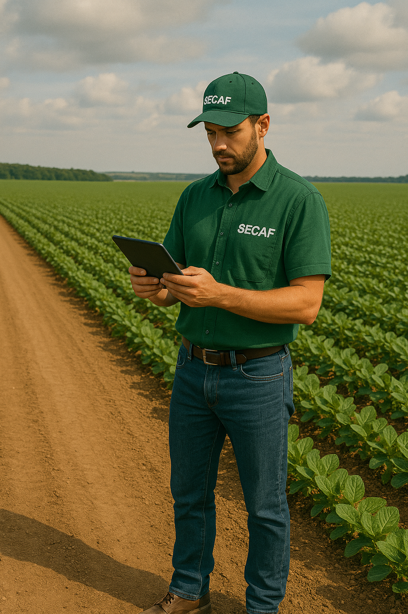

Laudos Técnicos Agrícolas
A SECAF realiza diversos tipos de laudos técnicos essenciais para comprovação, avaliação, perícia e viabilidade de atividades rurais. Esses documentos são fundamentais para garantir segurança jurídica, acessar políticas públicas e formalizar operações agrícolas.
Principais Laudos Oferecidos
1. Laudo de Aptidão Agrícola
Identifica o potencial produtivo da propriedade de acordo com as características do solo, relevo e clima. Usado para comprovação de viabilidade em projetos de crédito e regularização fundiária.
2. Laudo de Vistoria Técnica
Documento que relata as condições atuais de determinada área ou benfeitoria rural. Muito usado para fiscalização, concessão de crédito ou validação de projetos em execução.
3. Laudo de Avaliação de Imóvel Rural
Determina o valor de mercado de uma propriedade rural considerando sua localização, infraestrutura, acesso, uso do solo, benfeitorias e produtividade. Utilizado em processos de compra, venda, financiamento e herança.
4. Laudo Pericial Agrícola
Elaborado por peritos judiciais ou extrajudiciais, com objetivo de avaliar danos, perdas, litígios ou qualquer demanda técnica no meio rural. Necessário em processos judiciais ou administrativos.
5. Laudo de Viabilidade Técnica e Econômica
Apresenta a análise do retorno financeiro de um projeto agropecuário, considerando custos, receitas e prazos. Muito solicitado em projetos de crédito rural e propostas a fundos de investimento.
6. Laudo de Cobertura Vegetal e Uso do Solo
Analisa e comprova o uso atual e histórico da cobertura vegetal da propriedade, fundamental para regularização ambiental, CAR e licenciamentos.
7. Laudo de Implantação de Sistemas de Irrigação
Relata a capacidade hídrica, necessidade da cultura e dimensionamento do sistema de irrigação proposto. Essencial para acesso a financiamentos de irrigação.
8. Laudo de Conformidade Ambiental
Verifica se a propriedade rural está em conformidade com as exigências ambientais, como áreas de reserva legal, APPs, e práticas conservacionistas.
Atendimento Técnico Especializado
Todos os laudos são elaborados por engenheiros com registro profissional e emitidos com Anotação de Responsabilidade Técnica (ART), garantindo legalidade e validade jurídica.
Entre em contato com a SECAF para solicitar o laudo ideal para sua necessidade. Atendemos produtores, associações, cooperativas, instituições financeiras, escritórios de advocacia e órgãos públicos.